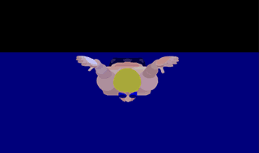
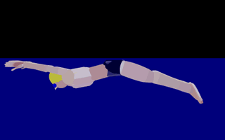
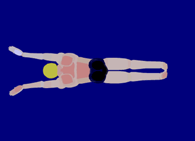

蝶泳
 

蝶泳的身体姿势掌握比较难，同时鞭状打水也不易掌握。在蝶泳学习的时候，我们会有专门的分解练习让您逐步掌握运作。
蝶泳的划水路线一般为“钥匙孔”形，指两手在胸下或腹下时的距离最近，这种前后划水路线比较均匀。
注意蝶泳的四肢动作是双臂、双腿同时协调发力。
手臂动作
- 蝶泳的手入水点在两肩的延长线上，以大拇指领先，斜插入水。
- 入水后，肩、肘前伸，两手沿曲线向外、后、下方抓水。
- 两手分开到肩宽时，屈肘，加速划水。
- 两手分开到达到最大宽度后，手臂转为向内、向上和向后划水，手臂上抬时保持高肘屈臂。两手在胸下或腹下时，手之间的距离最近。
- 蝶泳双手划水两手距离接近最近时，手臂划水的方向再一次改变，转为向外、向上和向后划水，直至出水。
- 划水出水后，手臂在肩的带动下经空中向前移臂，准备入水、移臂一般以低、平、放松的姿势从两侧前移。
呼吸
呼吸与划水的配合也是蝶泳技术的关键。
手臂结束向内划水时，头露出水面吸气，移臂时头还原入水。
记住两个*"之前"*，即头在手出水前出水，在手入水前入水。